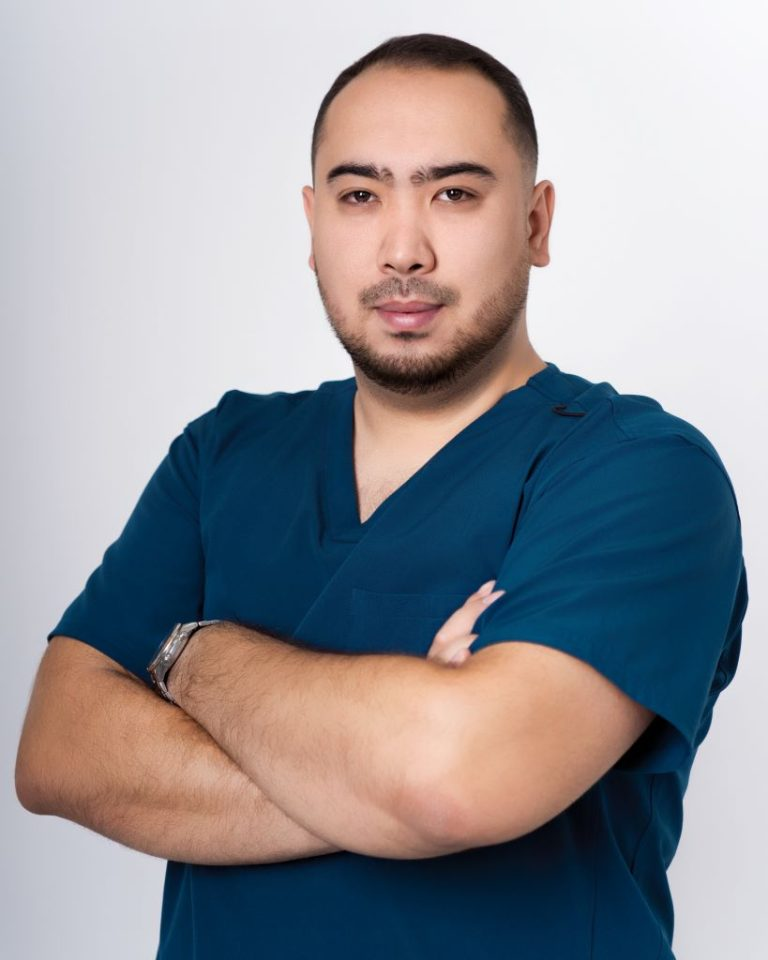
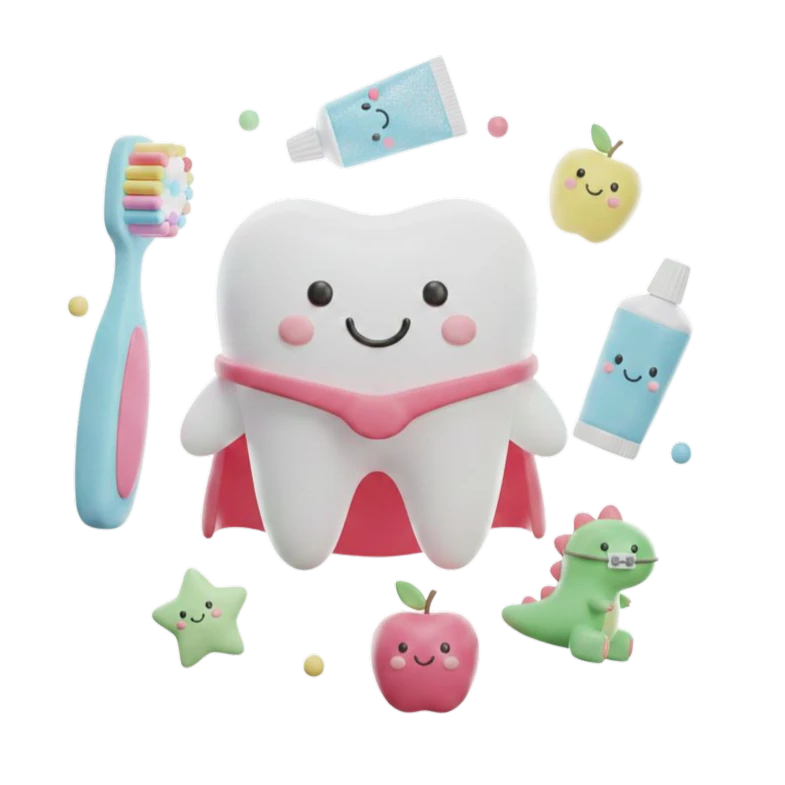

ONE DENT · АСТАНА
Ваша улыбка.
Наша забота.
Стоматология для всей семьи, где вас слышат.
От первого знакомства до здоровой улыбки —
с вниманием к вам и вашим близким.
4,92ГИС · Достык, 1а
Для взрослых
и маленьких улыбок
ВНИМАНИЕ К ДЕТАЛЯМ.
ЗАБОТА О ЧЕЛОВЕКЕ.
ЗАБОТА О ЧЕЛОВЕКЕ.

Знакомство начинается с доверияАташбек Саржан Ералиевич · врач сети One Dent
Улыбаться —
это естественно
это естественно
ВАШ ФИЛИАЛ ONE DENT
Достык, 1а
Астана · Есильский район
Удобно добраться
Планируйте визит
Ежедневно, 10:00–22:00
Время приёма и доступность услуги подтвердит администратор.
Информация в 2ГИСЛечение взрослых и детей3D-диагностикаЛечение под микроскопомЗабота на каждом этапе
01 / ОСНОВНЫЕ НАПРАВЛЕНИЯ СЕТИ
Для здоровья.
Для уверенности. Для вас.
От профилактики до восстановления зубов.
Поможем разобраться и выбрать
следующий шаг.
Не знаете, с чего начать? Начните с консультации.Подобрать услугу
02 / ПОДХОД ONE DENT
За каждой улыбкой —
человек.
У каждого пациента своя история. Поэтому хороший приём начинается с разговора: что беспокоит, что важно и какого результата вы ждёте.
Давайте познакомимсяПонятно на каждом этапе
Обсудите с врачом результаты осмотра, варианты лечения и стоимость до начала процедур.
Внимание к точности
В клинике доступны 3D-диагностика и лечение под микроскопом. Необходимость исследований определяет врач.
Взрослым и детям
Профилактика, лечение и восстановление зубов для разных возрастов — в одной клинике.

Большая забота о маленьких зубахДЛЯ САМЫХ ВАЖНЫХ ПАЦИЕНТОВ
Здоровые привычки
начинаются с детства.
Познакомиться со стоматологом, научиться ухаживать за зубами и вовремя заметить изменения. Вместе сделаем первый шаг.
- Лечение молочных и постоянных зубов
- Профилактика и профессиональная гигиена
- Лечение во сне по медицинским показаниям
03 / ЛЮДИ, КОТОРЫМ ВЫ ДОВЕРЯЕТЕ
Ваши врачи.
Внимание к каждому.
Познакомьтесь со специалистами.
Выберите врача — его имя добавится
в сообщение при записи.
Поможем подобрать врача
Уточнить у администратораСостав по открытым карточкам YDoc; список может быть неполным. Место и время приёма подтверждает администратор. Источник списка
04 / ДОВЕРИЕ ПАЦИЕНТОВ
Лучше всего о нас
расскажут пациенты.
Впечатления от приёма, отношение врачей и опыт лечения — в отзывах на независимой площадке.
Читать отзывы в 2ГИС2 302 оценки пациентов
Достык, 1а · данные на 28.09.202605 / ПЕРЕД ПЕРВЫМ ВИЗИТОМ
Можно спросить.
Отвечаем на то, что часто волнует
перед посещением стоматолога.
Как записаться на первый приём?
Позвоните по номеру +7 702 906 22 11 или напишите в WhatsApp через форму ниже. Администратор уточнит запрос, специалиста и удобное время. Запись считается подтверждённой после ответа администратора.
Сколько будет стоить лечение?
Стоимость зависит от диагноза, объёма работы и выбранных материалов. Уточните актуальную стоимость консультации у администратора. План и итоговую смету лечения врач составляет после осмотра и необходимых исследований.
Можно прийти с ребёнком?
Да, в One Dent есть детская стоматология. При записи сообщите возраст ребёнка и цель визита, чтобы администратор подобрал специалиста.
Что делать, если я боюсь стоматолога?
Расскажите об этом при записи и на приёме. Вы сможете обсудить с врачом этапы процедуры и доступные варианты обезболивания. Решение о лечении во сне принимается индивидуально после консультации специалистов.
Что взять с собой?
Возьмите удостоверение личности и имеющиеся снимки или заключения по лечению зубов. Для ребёнка уточните у администратора необходимые документы и условия сопровождения законным представителем.
ONE DENT РЯДОМ С ВАМИ
Одна забота.
Шесть адресов.
Выберите удобный филиал в Астане.
При выборе обновятся врачи, особенности,
отзывы и контакты на странице.
Достык, 1а
+7 702 906 22 11Кенесары, 47
+7 775 355 00 00Мангилик Ел, 28
+7 747 917 71 00Женис, 16
+7 702 917 70 71Туран, 22/1
+7 775 057 77 44Улы Дала, 58/1
+7 702 000 02 49Выбран филиал: Достык, 1а. Перейти к записи
ПЕРВЫЙ ШАГ К ЗДОРОВОЙ УЛЫБКЕ
Начнём
с знакомства?
Выберите направление — и филиал — подготовим сообщение
администратору в WhatsApp.
06 / БУДЕМ РАДЫ ВАС ВИДЕТЬ
Встретимся
в One Dent.
Астана, улица Достык, 1аЕсильский районЕжедневно, 10:00–22:00Перед визитом уточните время приёма по телефону.
+7 702 906 22 11one dentДостык, 1а
Открыть карту в 2ГИС Схематичная иллюстрация · точное расположение в 2ГИС